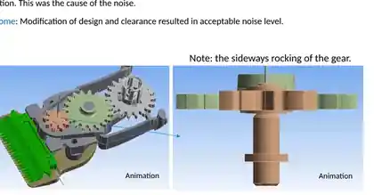
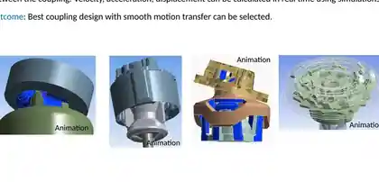
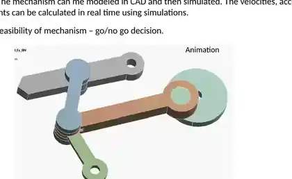
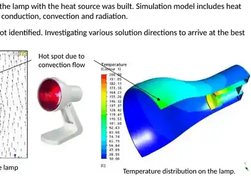
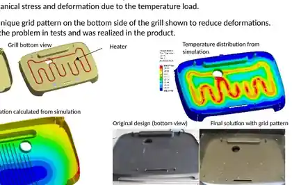
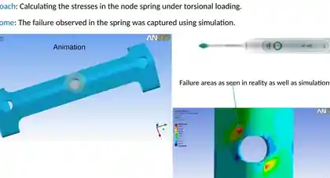
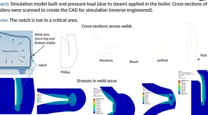
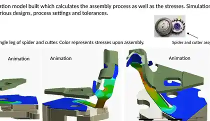

Physics & simulation
MSc research in CFD followed by industrial ANSYS and Fluent work across structural, thermal, flow and transient-dynamic product problems.
CFD, FEA, thermal-fluid and transient-dynamic engineering used to understand physical behaviour, screen concepts, diagnose failures, optimise product functions and reduce uncertainty before detailed realisation.


Public proof: EP 2 430 229 B1 lists Ajit Pal Singh among the inventors. View patent ↗
MSc research in CFD followed by industrial ANSYS and Fluent work across structural, thermal, flow and transient-dynamic product problems.
Used simulation for concept selection, root-cause analysis, design optimisation, technical validation and simulation-to-test decisions.
Later work added Python, ML, large datasets, analytical pipelines, optimisation thinking and decision-system design.
2026 direction: simulation automation, ML surrogates, design-space exploration and agentic engineering workflows — with physics and verification remaining authoritative.
1) Simulation / Computational Engineering: work across projects as a CFD/FEA/multiphysics specialist or lead. 2) Function Development / Pre-Development: own a technical function, personally use simulation to mature concepts and reduce prototype loops, demonstrate proof-of-concept and hand over a robust concept for detailed realisation.
The original 2016 Philips showcase was built to demonstrate what numerical simulation could do across consumer products. For this portfolio, the slide chrome has been removed: each case uses a cropped engineering visual plus a concise problem → simulation → decision story based on the original presentation.

A full-assembly transient-dynamics model reproduced the mechanism in operation and exposed a gear rocking sideways. That non-obvious motion was traced to the excessive noise; design and clearance changes brought the noise back to an acceptable level.

Alternative coupling geometries were modelled in CAD and compared with contact-enabled transient simulation. Velocity, acceleration and displacement through the motion were used to select and refine the concept that delivered the smoothest motion transfer.

The question was deliberately simple: would the mechanism deliver the required function? A time-dependent virtual model quantified displacement, velocity and acceleration before detailed realization, providing an early feasibility / go-no-go decision.

The top of the lamp exceeded the allowable temperature. A thermal-fluid model combining conduction, convection and radiation revealed the internal/external convection pattern responsible for the hotspot and focused the search for corrective design directions.

The concern was whether the heated steel water tube could fail under thermal loading. The model represented the tube and resistive heater, calculated deformation and stress, and showed that the stresses remained within the failure limits.

A coupled model combined temperature loading, conduction, convection, radiation and structural deformation. It showed that a new bottom-side grid pattern could reduce warpage. The modification solved the problem in testing and was realized in the product.

A key spring was repeatedly failing at a particular location. Torsional stress analysis reproduced the failure zone seen on the physical part, providing a simulation-to-test correlation for the root-cause investigation.

Cross-sections of Philips and competitor boilers were scanned, reverse-engineered into analysis geometry and loaded with steam pressure. The comparison assessed weld stresses and fatigue concern; the questioned notch in the Philips geometry was found not to be in a critical area.

The design question combined heating-element shape, metal-plate geometry and thermostat location. A heat-transfer / heat-loss model was iterated until the required bottom-surface temperature distribution was achieved, supporting selection of the optimum concept.

The model simulated both the assembly sequence and the stresses created by assembly. Repeated runs across design variants, process settings and tolerances tested whether the process remained smooth at nominal and extreme conditions before process freeze.
Evidence basis: all ten cases are derived from Ajit's 2016 Philips simulation showcase. The portfolio deliberately publishes only cropped visuals and engineering conclusions — not proprietary model files, solver input decks or confidential product data.
The strongest role is not necessarily detailed CAD ownership. It is responsibility for whether a product function works: understand the physics, develop concepts, simulate aggressively, test selectively, reach proof-of-concept and hand over a technically mature solution to the detailed-realisation team.
Simulation can reduce prototype loops by exposing physical drivers early, screening concepts virtually and defining the operating/design envelope before hardware is frozen.
A function developer uses the model as a decision tool, not as an end product. The objective is a robust function that meets requirements and can be handed over for detailed engineering.
Deep simulation experience can be embedded directly inside function ownership — reducing dependence on a separate CAE service group while still supporting adjacent projects when specialist analysis is needed.
Function Developer · Function Engineer · Function Lead · Technical Function Owner · Pre-Development Engineer · Technology Developer · Advanced Development Engineer · System / Subsystem Engineer · physics-heavy Technical Lead.
The next step is not “AI replacing CFD/FEA.” It is combining validated physics-based simulation with ML and automation to explore more designs, shorten turnaround time and focus expert attention on the decisions that matter.
Generate or use a public CFD/thermal dataset, train a surrogate model on solver outputs, quantify prediction error and demonstrate the speed/accuracy trade-off for design exploration.
Automate case generation, meshing/setup steps, parallel runs, convergence checks, result extraction, failed-run handling and engineering reporting while keeping deterministic solver results authoritative.
Explore neural operators / graph models for pressure, velocity, temperature or stress-field approximation after the scalar-surrogate foundation is validated.
Historical hands-on practice included APDL scripting, complex solver workflows, meshing/process automation and parallel simulation runs for optimisation studies.
Later career work added Python, ML, large-scale analytical datasets, forecasting/model evaluation and decision-oriented visualisation.
Current work includes studying and building with modern AI and agentic concepts. Claims on this page remain explicit about what is completed versus what is being developed.
New AI/CAE demonstrations will use public or privacy-safe synthetic data and non-proprietary geometries. Historical Philips cases establish industrial simulation depth; the 2026 projects establish current technical recency.
Structural stress/deformation, transient structural, transient dynamics, mechanism/rigid-body motion, thermal stress, contact and product-failure analysis.
Single-phase and multiphase flow, thermal-fluid behaviour and phase-transfer work, including steam/flow applications in consumer-product development.
ANSYS APDL scripting plus automated simulation steps, meshing/workflow logic and parallel job execution for complex studies and optimisation.
Geometry preparation and model/design iteration in support of analysis; CAD is used as an engineering enabler rather than the target career specialism.
Model interpretation is anchored in physical behaviour, sensitivity and experimental evidence rather than solver output alone.
Later-career capability in data science, predictive modelling, large datasets, automation, visualisation and AI — now being brought back into computational engineering.
Historical custom Fluent programming was used, but the exact mix of UDF/C, Scheme or journal scripting is being re-verified before a more specific public claim is made.
The portfolio separates public patent evidence, surviving professional material, practitioner-confirmed historical experience and new public/synthetic demonstrations.
The 2016 Philips simulation showcase, public patents, surviving engineering documents and career records support a long-running CAE / product-development practice across multiple consumer-product categories.
Advanced ANSYS and Fluent use, APDL, multiphase/phase-transfer CFD, simulation automation, cross-product specialist support and selected historical scale figures are retained from Ajit's direct practitioner record where surviving files are incomplete.
No claim is made that every old model was solely authored by Ajit, that proprietary Philips geometry/data is public, or that the 2026 ML/agentic CAE demonstrations are complete before they are actually built and validated.